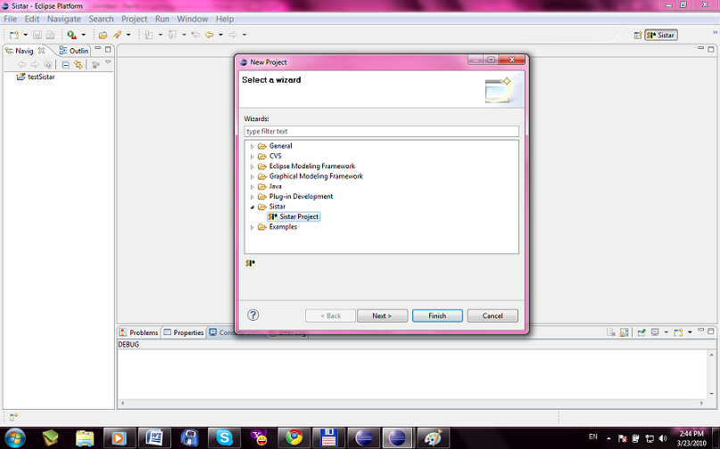
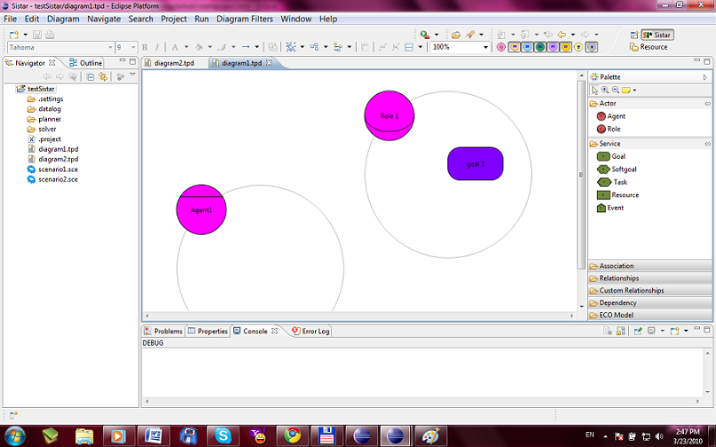

Create New Project
File -> New -> Project -> Sistar(Folder) -> Sistar Project
This action will create a new Sistar Project in the workspace. 
The created project will have three folders created: datalog, planner, and solver. 